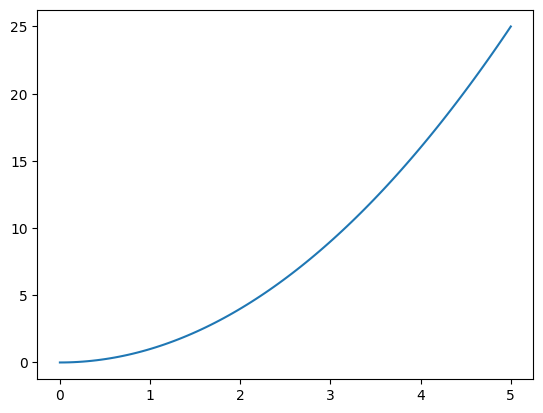
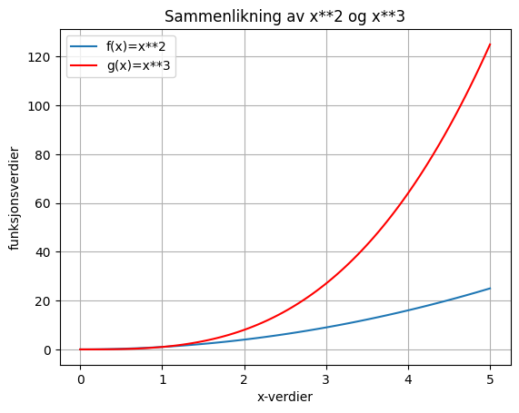

Plotting: Matematiske funksjoner#
I denne delen skal vi lære om plotting.
For å plotte skal vi bruke en pakke som heter matplotlib. Mange Python-installasjoner vil inkludere denne pakken, men man kan også installere pakken ved å skrive pip install matplotlib i terminalvinduet.
Et enkelt plot#
La oss plotte den matematiske funksjonen \(x^2\) i intervallet \([0, 5]\).
import numpy as np
import matplotlib.pyplot as plt
def f(x):
return x**2 # Definerer funksjonen
x = np.linspace(0, 5, 100) # Hundre punkter mellom 0 og 5
y = f(x) # Setter x inn i funksjonen f. y blir da funksjonsverdier
plt.plot(x, y) # Lager plot
plt.show() # Viser plot

Stil#
«Du må ha med navn på aksene! 😠» - En gretten mattelærer (sikkert)
La oss få med litt stil på plottene våre.
import numpy as np
import matplotlib.pyplot as plt
def f(x):
return x**2
def g(x):
return x**3
x = np.linspace(0, 5, 100)
plt.title("Sammenlikning av x**2 og x**3") # Tittel
plt.xlabel("x-verdier") # Gir navn til x-aksen
plt.ylabel("funksjonsverdier") # Gir navn til y-aksen
plt.plot(x, f(x), label="f(x)=x**2") # label gir navn til funksjonen
plt.plot(x, g(x), label="g(x)=x**3", color="red") # label gir navn til funksjonen, color gir farge
plt.grid() # Viser rutenett
plt.legend() # Lager boksen med funksjonenes navn
plt.show() # Viser plottet

«Wow! For et fint plott! 🤓» - En fornøyd mattelærer (sikkert)
Undersøk koden grundig. Legg merke til hvordan vi kan sette inn funksjonsverdier i selve plot()-funksjonen.
Legg også merke til hvordan vi kan plotte flere grafer med plot() før vi kjører show()-funksjonen. Vi kan tenke på plot() som en funksjon som tegner og show() som å en funksjon som viser det vi har tegnet.
Endre på aksene
Aksene for plottet settes automatisk, men hvis vi ønsker å endre på disse så kan vi bruke plt.xlim()- og plt.ylim()-funksjonene.
plt.xlim(start, slutt)gjør at plottet bare viserx-verdier mellomstartogslutt.plt.ylim(start, slutt)gjør at plottet bare visery-verdier mellomstartogslutt.
Oppgaver#
Oppgave 1#
Overskuddet \(O(x)\) til en bedrift etter å ha produsert \(x\) enheter er gitt ved \(O(x)=-x^2+50x-96\).
Lag en funksjon
O(x)som regner ut og returnerer verdien av \(-x^2+50x-96\)Lag en array
xmed \(100\) jevnt fordelte tall mellom \(0\) og \(50\).
Plott den matematiske funksjonen O(x). Få med tittel og navn på aksene.
Oppgave 2#
Lag en array x med 100 jevnt fordelte tall i intervallet \([-2, 2]\).
Plott disse matematiske funksjonene i samme koordinatsystem:
\(f(x) = x+2\)
\(g(x) = x^2\)
\(h(x) = abs(x)\)
Få med label på hver funksjon, og bruk plt.legend for å vise hvilken funksjon som er hvilken.
I hvilke punkter krysser de forskjellige funksjonene hverandre? Hvilke funksjoner er det som krysses?
Skriv svaret som en kommentar.